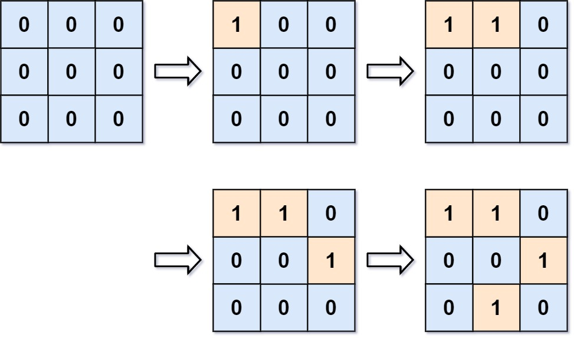

| Category | Difficulty | Likes | Dislikes |
|---|---|---|---|
| Algorithms | Hard | 1967 | 76 |
uber | google | facebook | tiktok
You are given an empty 2D binary grid grid of size m x n. The grid represents a map where 0's represent water and 1's represent land. Initially, all the cells of grid are water cells (i.e., all the cells are 0's).
We may perform an add land operation which turns the water at position into a land. You are given an array positions where positions[i] = [ri, ci] is the position (ri, ci) at which we should operate the ith operation.
Return an array of integers answer where answer[i] is the number of islands after turning the cell (ri, ci) into a land.
An island is surrounded by water and is formed by connecting adjacent lands horizontally or vertically. You may assume all four edges of the grid are all surrounded by water.
Example 1:

Input: m = 3, n = 3, positions = [[0,0],[0,1],[1,2],[2,1]]
Output: [1,1,2,3]
Explanation:
Initially, the 2d grid is filled with water.
- Operation #1: addLand(0, 0) turns the water at grid[0][0] into a land. We have 1 island.
- Operation #2: addLand(0, 1) turns the water at grid[0][1] into a land. We still have 1 island.
- Operation #3: addLand(1, 2) turns the water at grid[1][2] into a land. We have 2 islands.
- Operation #4: addLand(2, 1) turns the water at grid[2][1] into a land. We have 3 islands.Example 2:
Input: m = 1, n = 1, positions = [[0,0]]
Output: [1]
Constraints:
1 <= m, n, positions.length <= 1041 <= m * n <= 104positions[i].length == 20 <= ri < m0 <= ci < n
Follow up: Could you solve it in time complexity O(k log(mn)), where k == positions.length?